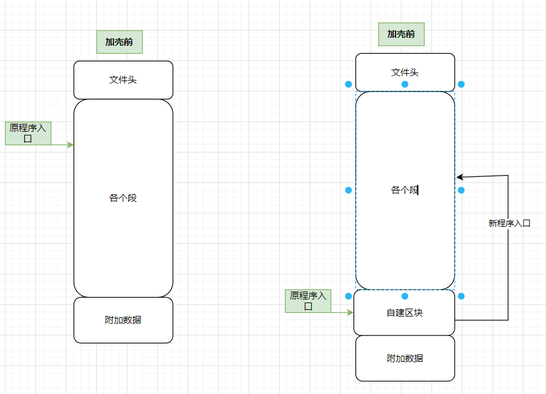
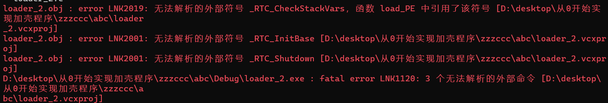
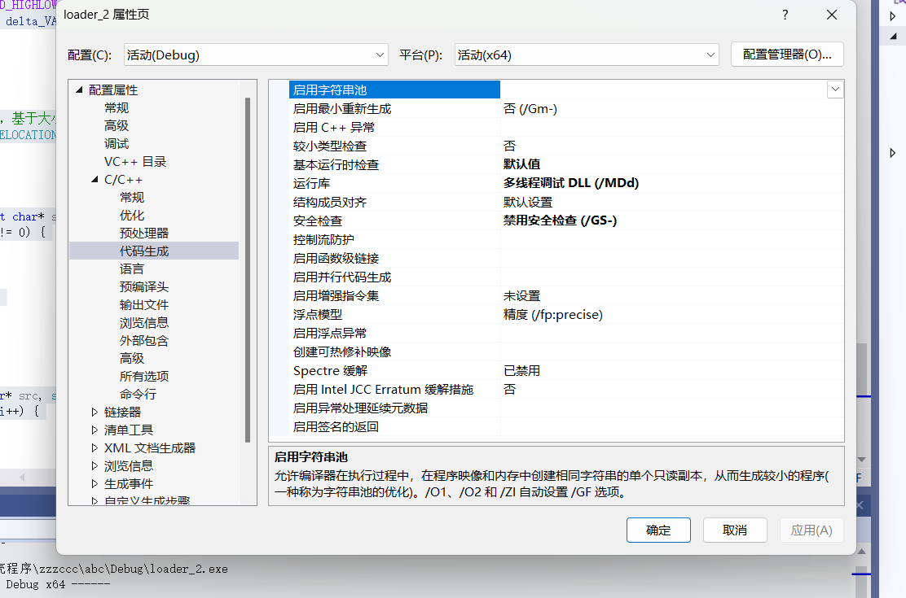
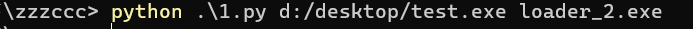
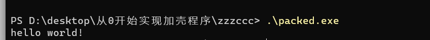
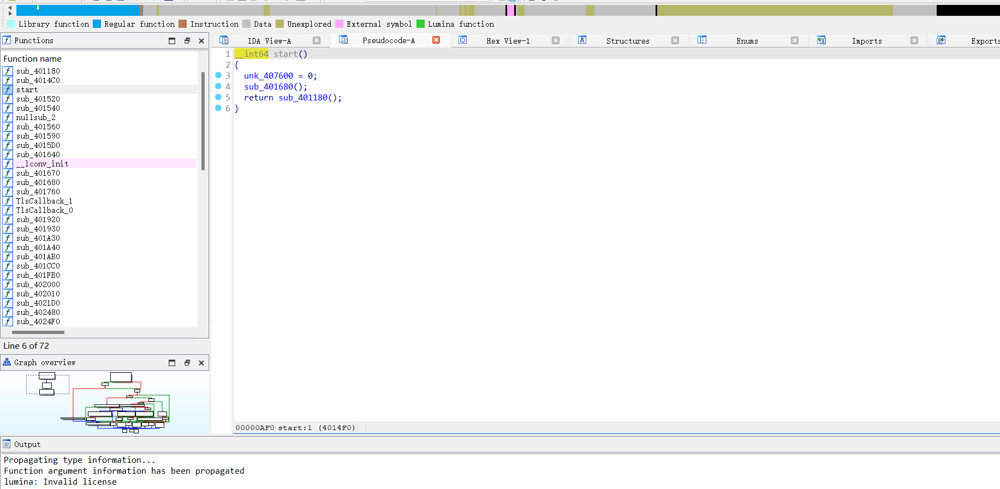
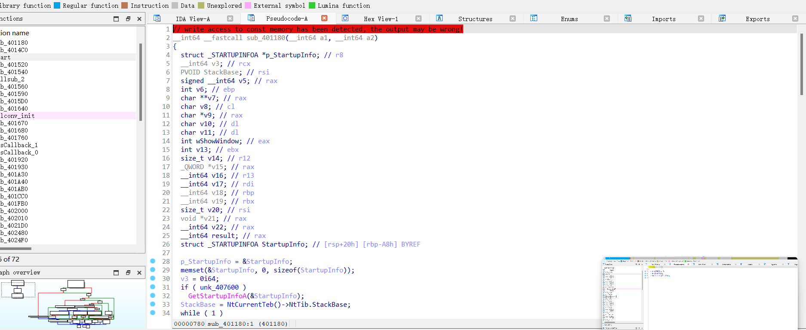
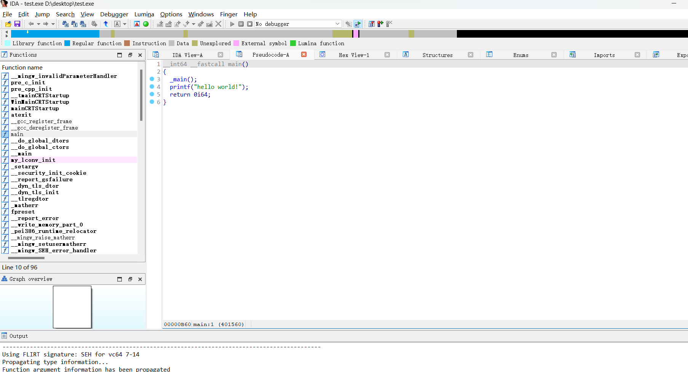

实现简单的加壳器（二）
实现加壳器（二）加载PE
预计实现加壳程序将为PE文件添加一个区块，并在该区块内实现代码段的加解密或加解压缩，反调式等功能，故我们实现的第一步就是将PE文件正确地读入内存，以便后续处理

环境配置
1、安装Visual Studio
2、(Visual Studio C++）#include＜windows.h＞报错：无法打开windows.h解决方案汇总_Natuki丶的博客-CSDN博客
LORDPE
加载PE并返回相应的入口地址：
1 | |
s_perm & IMAGE_SCN_MEM_WRITE解释
s_perm & IMAGE_SCN_MEM_WRITE是一个位运算表达式，用于检查一个值s_perm中是否包含特定的标志IMAGE_SCN_MEM_WRITE。让我们详细解释这个表达式的工作方式：
s_perm是一个用于表示某个节属性的整数值，通常存储在PE文件的节头部信息中。这个整数值通常包含多个标志，每个标志用于描述特定的属性。例如，s_perm可能包含信息，如节是否可读、可写、可执行等等。IMAGE_SCN_MEM_WRITE是一个常量值，通常是一个二进制位序列，表示某个标志或属性。在这种情况下，IMAGE_SCN_MEM_WRITE表示“可写”的标志。这个标志通常与某个节的属性相关联，用于指示是否可以在该节中进行写操作（例如，写入数据）。&运算符是位与运算符，它将两个二进制值的对应位进行逐位与操作。如果两个相应的位都是1，结果位将设置为1；否则，结果位将设置为0。因此，
s_perm & IMAGE_SCN_MEM_WRITE的操作是将s_perm的二进制值与IMAGE_SCN_MEM_WRITE的二进制值进行逐位与操作。如果结果不为零（即，至少有一个对应的位是1），则表示s_perm中包含了IMAGE_SCN_MEM_WRITE的标志，即该节是可写的。综上所述，
s_perm & IMAGE_SCN_MEM_WRITE这个表达式用于检查s_perm中是否包含节的“可写”标志，以确定该节是否允许写入操作。如果结果为非零，表示允许写入，如果结果为零，表示不允许写入。这有助于代码根据节的属性来设置适当的内存页权限
导入表
前一篇博客已经介绍了导入表相关的知识，下面实际编写一下填充 IAT 的代码。要注意填充 IAT 的代码必须在加载 PE 头和 Sections 之后，早于设置内存保护执行
补充下**_IMAGE_THUNK_DATA**相关知识
union（联合）是一种特殊的数据结构，允许在同一内存位置存储不同的数据类型。与struct（结构体）不同，union中的成员共享相同的内存空间，因此只能同时存储其中一个成员的值。这意味着，union在内存中的大小等于其最大成员的大小。
2
3
4
5
6
7
8typedef struct _IMAGE_THUNK_DATA {
union {
DWORD ForwarderString; // PBYTE
DWORD Function; // PDWORD
DWORD Ordinal;
PIMAGE_IMPORT_BY_NAME AddressOfData;
} u1;
} IMAGE_THUNK_DATA, *PIMAGE_THUNK_DATA;在
IMAGE_THUNK_DATA结构体中，有一个联合（u1）包含了不同类型的字段，具体取决于导入函数是按名称导入还是按序号导入：
ForwarderString：如果导入函数是一个转发（forward）函数，这个字段将包含一个指向转发字符串的指针。转发函数实际上是将调用转发到另一个DLL中的函数。Function：如果导入函数是按名称导入的，这个字段将包含一个指向导入函数的地址的指针。Ordinal：如果导入函数是按序号导入的，这个字段将包含函数的序号。AddressOfData：如果导入函数按名称导入，这个字段将包含一个指向IMAGE_IMPORT_BY_NAME结构体的指针，该结构体包含了导入函数的名称。在实际的使用中，
IMAGE_THUNK_DATA结构体通常与导入表一起使用，用于表示导入函数的信息。通过分析导入表中的IMAGE_THUNK_DATA条目，可以确定程序在运行时所调用的外部函数的名称或序号，然后通过GetProcAddress函数获取函数的实际地址进行调用。
IMAGE_IMPORT_BY_NAME介绍
IMAGE_IMPORT_BY_NAME是用于描述在Windows PE (Portable Executable) 文件格式中的导入表中函数的结构体。它通常用于按名称导入函数的情况，其中函数的名称存储在这个结构体中。以下是
IMAGE_IMPORT_BY_NAME结构体的定义：
2
3
4cCopy codetypedef struct _IMAGE_IMPORT_BY_NAME {
WORD Hint; // 函数的序号（用于加速导入过程）
BYTE Name[1]; // 函数的 ASCII 名称
} IMAGE_IMPORT_BY_NAME, *PIMAGE_IMPORT_BY_NAME;让我们详细解释
IMAGE_IMPORT_BY_NAME结构体的字段和使用方法：
Hint：这是一个WORD类型的字段，它存储了函数的序号。在导入函数时，Windows 可以通过查找序号来快速定位要导入的函数，而无需进行字符串比较。这个字段是可选的，如果不使用序号，可以将其设置为零。Name：这是一个字节数组，用于存储函数的 ASCII 名称。函数的实际名称以零结尾，因此在数组中的字符以 null 终止。由于函数名称的长度不确定，因此将其定义为数组的一部分，这样就可以容纳任意长度的函数名称。
1 | |
这段代码中
(LPSTR)lookup_addr的部分是一个类型转换，它将一个DWORD类型的变量lookup_addr转换为LPSTR类型的指针。让我们详细解释这个类型转换的目的和作用：
lookup_addr是一个DWORD类型的变量，通常用于存储一个地址或一个函数的序号。在这个特定的上下文中，它用于存储函数的地址或名称。GetProcAddress函数用于查找并返回一个函数的地址，但它要求传递一个指向函数名称的 ASCII 字符串的指针作为参数。(LPSTR)是一个类型转换操作符，它将lookup_addr从DWORD类型转换为LPSTR类型。LPSTR是一个 Windows 数据类型，代表一个指向以 null 结尾的 ASCII 字符串的指针。也就是说，它用于指向字符串的首字符，直到遇到 null 终止符为止。通过将
lookup_addr强制类型转换为LPSTR，我们实际上告诉编译器将lookup_addr中存储的数值解释为一个字符串的地址。这是因为GetProcAddress函数期望一个指向字符串的指针，以便查找相应的函数。所以，这个类型转换是为了满足
GetProcAddress函数的参数要求，以便正确地查找并返回相应函数的地址或处理函数名称。如果lookup_addr包含函数名称的地址，那么(LPSTR)lookup_addr将是指向该函数名称的指针
重定位
前一篇没有讲解重定位，这里补上个不戳的博客
PE文件学习笔记（四）：重定位表（Relocation Table）解析_Apollon_krj的博客-CSDN博客
1 | |
实现加壳机（三）
加壳机
加壳机做的事情包括：
在 section table 里添加 section
- 根据 section table 和 file_alignment 决定如何分配空间
- 根据 section_alignment 计算 virtual size
- 根据上一个 section 大小和位置计算 virtual address
- 填充 pointer_to_raw_data 和 size_of_raw_data
- 设置合适的 characteristics
计算修改 number_of_sections
计算修改 size_of_image
计算修改 size_of_headers
这里利用lief库快捷操作，
他真的我哭死，省了非常多操作，代码如下：1
2
3
4
5
6
7
8
9
10
11
12
13
14
15
16
17
18
19
20
21
22
23
24
25
26
27
28
29
30
31
32
33
34
35
36
37import lief # 导入LIEF库
import sys # 导入sys库，用于命令行参数处理
# 读取文件内容并返回为字节数组
def read_file(path):
with open(path, 'rb') as file:
return bytearray(file.read())
# 检查命令行参数是否足够
if len(sys.argv) < 3:
print("需要提供壳程序路径和被加载程序路径")
sys.exit(-1)
# 获取命令行参数中的壳程序路径和被加载程序路径
loader_path = sys.argv[1]
program_path = sys.argv[2]
# 使用LIEF库解析壳程序
loader_binary = lief.PE.parse(loader_path)
# 读取被加载程序的内容
program_content = read_file(program_path)
# 创建一个名为".packed"的新节，并将被加载程序的内容赋值给这个节
packed_section = lief.PE.Section(".packed")
packed_section.content = program_content
# 将新的节添加到壳程序中，类型为数据节
loader_binary.add_section(packed_section, lief.PE.SECTION_TYPES.DATA)
# 使用LIEF库构建壳程序
builder = lief.PE.Builder(loader_binary)
builder.build()
# 将修改后的壳程序写入文件 "packed.exe"
builder.write("packed.exe")壳程序
接下来完成我们的壳程序，这里壳程序非常简单，就是一个跳转，与上一篇博客的程序类似
1
2
3
4
5
6
7
8
9
10
11
12
13
14
15
16
17
18
19
20
21
22
23
24
25
26
27
28
29
30
31
32
33
34
35
36
37
38
39
40
41
42
43
44
45
46
47
48
49
50
51
52
53
54
55
56
57
58
59
60
61
62
63
64
65
66
67
68
69
70
71
72
73
74
75
76
77
78
79
80
81
82
83
84
85
86
87
88
89
90
91
92
93
94
95
96
97
98
99
100
101
102
103
104
105
106
107
108
109
110
111
112
113
114
115
116
117
118
119
120
121
122
123
124
125
126
127
128
129
130
131
132
133
134
135
136
137
138
139
140
141
142
143
144
145
146
147
148
149
150
151
152
153
154
155
156
157
158
159
160
161
162
163
164
165
166
167
168
169
170
171
172
173
174
175
176
177
178
179
180
181
182
183
184
185
186
187
188
189
190
191
192
193
194
195
196
197
198
199
200
201
202
203
204
205
206
207
208
209
210
211
212
213
214
215
216
217
218
219
220
221
222
223
224
225
226
227
228
229
230
231
232
233
234
235
236
237
238
239
240
241
242
243
244#define _CRT_SECURE_NO_WARNINGS
#include <stdio.h>
#include <stdlib.h>
#include <Windows.h>
#include <winnt.h>
void* load_PE(char* PE_data);
void fix_iat(char*, IMAGE_NT_HEADERS64*);
void fix_base_reloc(char* p_image_base, IMAGE_NT_HEADERS64* p_NT_headers64);
int mystrcmp(const char* str1, const char* str2);
void mymemcpy(char* dest, const char* src, size_t length);
// 程序入口点
int _start(void) {
// 获取当前模块的基址（地址）
char* unpacker_VA = (char*)GetModuleHandleA(NULL);
// 获取DOS头部
IMAGE_DOS_HEADER* p_DOS_header = (IMAGE_DOS_HEADER*)unpacker_VA;
// 获取NT头部，NT头部偏移位置位于DOS头部之后
IMAGE_NT_HEADERS* p_NT_headers = (IMAGE_NT_HEADERS*)(((char*)unpacker_VA) + p_DOS_header->e_lfanew);
// 获取节表的起始地址
IMAGE_SECTION_HEADER* sections = (IMAGE_SECTION_HEADER*)(p_NT_headers + 1);
// 用于存储包含目标数据的节的地址
char* packed = NULL;
// 目标节的名称
char packed_section_name[] = ".packed";
// 遍历所有节以查找目标节
for (int i = 0; i < p_NT_headers->FileHeader.NumberOfSections; i++) {
// 比较当前节的名称与目标节名称
if (mystrcmp((const char*)sections[i].Name, packed_section_name) == 0) {
// 如果匹配，存储目标节的虚拟地址
packed = unpacker_VA + sections[i].VirtualAddress;
break;
}
}
// 如果找到了目标节
if (packed != NULL) {
// 加载目标PE文件并获取入口点函数地址
void (*entrypoint)(void) = (void (*)(void))load_PE(packed);
// 执行目标PE文件的入口点函数
entrypoint();
}
// 返回0表示成功执行
return 0;
}
void* load_PE(char* PE_data) {
// 获取DOS头
IMAGE_DOS_HEADER* p_DOS_header = (IMAGE_DOS_HEADER*)PE_data;
// 获取NT头，注意要加上DOS头的偏移量
IMAGE_NT_HEADERS64* p_NT_headers64 = (IMAGE_NT_HEADERS64*)(PE_data + p_DOS_header->e_lfanew);
// 从PE头提取信息
DWORD size_of_image = p_NT_headers64->OptionalHeader.SizeOfImage; // 镜像大小
DWORD entry_point_RVA = p_NT_headers64->OptionalHeader.AddressOfEntryPoint; // 入口点的RVA
DWORD size_of_headers = p_NT_headers64->OptionalHeader.SizeOfHeaders; // 头部大小
// 分配内存
char* p_image_base = (char*)VirtualAlloc(NULL, size_of_image, MEM_RESERVE | MEM_COMMIT, PAGE_READWRITE);
if (p_image_base == NULL) {
return NULL;
}
// 复制PE头到内存中
mymemcpy(p_image_base, PE_data, size_of_headers);
// 节头在IMAGE_NT_HEADERS64结构之后开始，所以这里进行了指针运算
IMAGE_SECTION_HEADER* sections = (IMAGE_SECTION_HEADER*)(p_NT_headers64 + 1);
for (int i = 0; i < p_NT_headers64->FileHeader.NumberOfSections; i++) {
// 计算我们需要复制内容的VA地址，根据RVA计算
// 注意：section[i].VirtualAddress是一个RVA
char* dest = p_image_base + sections[i].VirtualAddress;
// 检查是否有原始数据要复制
if (sections[i].SizeOfRawData > 0) {
// 复制SizeOfRawData字节的原始数据，从文件中的PointerToRawData偏移处开始
mymemcpy(dest, PE_data + sections[i].PointerToRawData, sections[i].SizeOfRawData);
}
else {
// 如果没有原始数据，则将目标区域填充为零，大小为Misc.VirtualSize
mymemcpy(dest, 0, sections[i].Misc.VirtualSize);
}
}
fix_iat(p_image_base, p_NT_headers64);
//printf("修复IAT");
fix_base_reloc(p_image_base, p_NT_headers64);
//printf("修复重定位表");
// 设置PE文件头的权限为只读
DWORD oldProtect;
VirtualProtect(p_image_base, p_NT_headers64->OptionalHeader.SizeOfHeaders, PAGE_READONLY, &oldProtect);
// 遍历PE文件的各个节
for (int i = 0; i < p_NT_headers64->FileHeader.NumberOfSections; ++i) {
// 计算当前节在内存中的虚拟地址
char* dest = p_image_base + sections[i].VirtualAddress;
// 获取当前节的属性标志
DWORD s_perm = sections[i].Characteristics;
// 初始化虚拟内存权限标志为0，因为虚拟内存和节头的标志不完全相同
DWORD v_perm = 0;
// 检查当前节是否具有可执行属性
if (s_perm & IMAGE_SCN_MEM_EXECUTE) {
// 如果可执行，进一步检查是否可写
v_perm = (s_perm & IMAGE_SCN_MEM_WRITE) ? PAGE_EXECUTE_READWRITE : PAGE_EXECUTE_READ;
}
else {
// 如果不可执行，同样进一步检查是否可写
v_perm = (s_perm & IMAGE_SCN_MEM_WRITE) ? PAGE_READWRITE : PAGE_READONLY;
}
// 使用VirtualProtect函数设置当前节在内存中的权限
VirtualProtect(dest, sections[i].Misc.VirtualSize, v_perm, &oldProtect);
}
return (void*)(p_image_base + entry_point_RVA);
}
void fix_iat(char* p_image_base, IMAGE_NT_HEADERS64* p_NT_headers64) {
// 获取PE头中的数据目录
IMAGE_DATA_DIRECTORY* data_directory = p_NT_headers64->OptionalHeader.DataDirectory;
// 加载导入描述符数组的地址
IMAGE_IMPORT_DESCRIPTOR* import_descriptors =
(IMAGE_IMPORT_DESCRIPTOR*)(p_image_base + data_directory[IMAGE_DIRECTORY_ENTRY_IMPORT].VirtualAddress);
// 导入描述符数组以空值终止
for (int i = 0; import_descriptors[i].OriginalFirstThunk != 0; ++i) {
// 获取DLL的名称并加载它
char* module_name = p_image_base + import_descriptors[i].Name;
HMODULE import_module = LoadLibraryA(module_name);
if (import_module == NULL) {
//printf("导入模块为空");
//abort();
}
// 查找表（Lookup Table）指向函数名称或序数，它是IDT（Import Descriptor Table）（即上一篇博客所说的INT）
IMAGE_THUNK_DATA* lookup_table = (IMAGE_THUNK_DATA*)(p_image_base + import_descriptors[i].OriginalFirstThunk);
// 地址表是查找表的副本，但我们将加载的函数地址放入其中，它是IAT（Import Address Table）
IMAGE_THUNK_DATA* address_table = (IMAGE_THUNK_DATA*)(p_image_base + import_descriptors[i].FirstThunk);
// 以空值终止的数组，再次用于终止循环
for (int j = 0; lookup_table[j].u1.AddressOfData != 0; ++j) {
void* function_handle = NULL;
// 检查查找表以获取要导入的函数名称的地址
ULONGLONG lookup_addr = lookup_table[j].u1.AddressOfData;
if ((lookup_addr & IMAGE_ORDINAL_FLAG) == 0) { // 如果第一位不是1
// 通过名称导入：获取IMAGE_IMPORT_BY_NAME结构
IMAGE_IMPORT_BY_NAME* image_import = (IMAGE_IMPORT_BY_NAME*)(p_image_base + lookup_addr);
// 该结构指向ASCII函数名称
char* funct_name = (char*)&(image_import->Name);
// 从模块和名称中获取该函数的地址
function_handle = (void*)GetProcAddress(import_module, funct_name);
}
else {
// 通过序数直接导入
function_handle = (void*)GetProcAddress(import_module, (LPSTR)lookup_addr);
}
if (function_handle == NULL) {
// printf("函数句柄为空");
//abort();
}
// 修改IAT，将函数地址放入其中
address_table[j].u1.Function = (ULONGLONG)function_handle;
}
}
}
void fix_base_reloc(char* p_image_base, IMAGE_NT_HEADERS64* p_NT_headers64) {
// 获取PE文件的数据目录
IMAGE_DATA_DIRECTORY* data_directory = p_NT_headers64->OptionalHeader.DataDirectory;
// 计算ImageBase的偏移量
ULONGLONG delta_VA_reloc = ((ULONGLONG)p_image_base) - p_NT_headers64->OptionalHeader.ImageBase;
// 如果存在重定位表且我们确实移动了ImageBase
if (data_directory[IMAGE_DIRECTORY_ENTRY_BASERELOC].VirtualAddress != 0 && delta_VA_reloc != 0) {
// 计算重定位表的地址
IMAGE_BASE_RELOCATION* p_reloc =
(IMAGE_BASE_RELOCATION*)(p_image_base + data_directory[IMAGE_DIRECTORY_ENTRY_BASERELOC].VirtualAddress);
// 重定位表是一个以null结尾的数组
while (p_reloc->VirtualAddress != 0) {
// 该块中的重定位数量，即总大小减去"头"的大小，再除以2（这些都是字，每个字2个字节）
DWORD size = (p_reloc->SizeOfBlock - sizeof(IMAGE_BASE_RELOCATION)) / 2;
// 重定位块中第一个重定位元素，位于头之后（使用指针运算）
WORD* fixups = (WORD*)(p_reloc + 1);
for (unsigned int i = 0; i < size; ++i) {
// 类型是重定位字的前4位
int type = fixups[i] >> 12;
// 偏移是重定位字的后12位
int offset = fixups[i] & 0x0fff;
// 这是我们将要更改的地址
ULONGLONG * change_addr = (ULONGLONG*)(p_image_base + p_reloc->VirtualAddress + offset);
// 只有一种类型需要做出更改
switch (type) {
case IMAGE_REL_BASED_HIGHLOW:
*change_addr += delta_VA_reloc;
break;
default:
break;
}
}
// 切换到下一个重定位块，基于大小
p_reloc = (IMAGE_BASE_RELOCATION*)(((ULONGLONG)p_reloc) + p_reloc->SizeOfBlock);
}
}
}
int mystrcmp(const char* str1, const char* str2) {
while (*str1 == *str2 && *str1 != 0) {
str1++;
str2++;
}
if (*str1 == 0 && *str2 == 0) {
return 0;
}
return -1;
}
void mymemcpy(char* dest, const char* src, size_t length) {
for (size_t i = 0; i < length; i++) {
dest[i] = src[i];
}
}这里注意要将printf等函数注释，并且自己实现了mempcy与strcmp函数，不然编译后的程序过大
生成过程
Cmakelist.txt如下1
2
3add_executable(loader_2 WIN32 loader_2.c)
target_compile_options(loader_2 PRIVATE /GS-)
target_link_options(loader_2 PRIVATE /NODEFAULTLIB /ENTRY:_start)这里简单记录下生成load文件的过程
将
loader_2.c与Cmakelist.txt放在同一个文件夹下，打开powershell,进入该文件夹使用以下指令
1
2cmake .
cmake --build .这里会报错

用visual studio打开相应的sln解决方案

在项目->属性中将基本运行时检查调为默认值，在Visual Studio中运行即可生成相应的文件

使用类似命令即可完成加壳
尝试运行加壳程序

可以看到正常运行
尝试用ida查看



可以看到对比，即加壳成功了
最简单的加壳程序就完成了
附录
main函数参数
main
函数是C和C++程序的入口函数，它是程序的启动点。在这个特定的代码示例中，main
函数接受两个参数：argc 和
argv。以下是对这两个参数的详细解释：
argc（Argument Count）：
argc是一个整数，表示命令行参数的数量，包括程序名称本身。它告诉你有多少个参数被传递给程序。- 例如，如果你在命令行上运行程序如下：
myprogram.exe arg1 arg2 arg3，那么argc的值将为4，因为有四个参数，包括程序名称本身。
argv（Argument Vector）：
argv是一个指向字符指针数组的指针，表示命令行参数的实际值。每个元素是一个字符指针，指向一个以空字符（'\0'）结尾的字符串，表示一个命令行参数。例如，如果你运行上述命令行，
1
argv数组将包含以下内容：
argv[0]指向程序名称，即"myprogram.exe"argv[1]指向第一个参数，即"arg1"argv[2]指向第二个参数，即"arg2"argv[3]指向第三个参数，即"arg3"argv[4]是一个空指针（NULL），表示参数列表的结束。
fseek
fseek
函数是用于在文件中移动文件指针位置的C标准库函数。在这个代码示例中，fseek
函数用于将文件指针移动到文件的末尾位置。
具体来说，以下是对这个函数调用的解释：
exe_file: 这是一个指向已打开文件的指针，表示你要操作的文件。在示例中，它是用fopen打开的文件指针。0L: 这是要移动的偏移量（offset）。在这里，偏移量设置为0，表示不进行移动，只是查询当前文件指针的位置。SEEK_END: 这是指定移动方式的参数。SEEK_END表示从文件末尾开始计算偏移量。也就是说，它告诉fseek函数，要将文件指针位置设置为相对于文件末尾的偏移量。
ftell
ftell 用于获取当前文件指针的位置
1 | |
Visual studio使用fopen等函数报错
第一种方法：
在头文件之前写一行#define _CRT_SECURE_NO_WARNINGS
如下：
1 | |
第二种方法：
通过项目 -> 属性 -> C/C++ -> 预处理器 -> 预处理器定义 -> 编辑，在框内写入 _CRT_SECURE_NO_WARNINGS即可
VirtualAlloc
VirtualAlloc 函数是Windows
API中的一个非常重要的函数，用于在进程的虚拟地址空间中分配一块内存区域。在64位Windows系统中，它仍然是一个强大且广泛使用的函数，用于分配虚拟内存。以下是关于64位系统下的
VirtualAlloc 函数的详细用法：
1 | |
参数解释：
lpAddress：欲分配的内存块的首地址。可以指定一个特定的地址，也可以为NULL，让操作系统自动选择一个地址。dwSize：要分配的内存块的大小，以字节为单位。```c flAllocationType
1
2
3
4
5
6
7
8
9
：内存分配类型，用于指定分配内存的方式。常用的选项包括：
- `MEM_COMMIT`：分配物理内存并将其提交以供使用。
- `MEM_RESERVE`：保留虚拟地址空间，但不分配物理内存。
- `MEM_RESERVE | MEM_COMMIT`：同时保留虚拟地址空间并分配物理内存（常见用法）。
- ```c
flProtect：内存保护标志，用于指定内存区域的访问权限和保护级别。常见的选项包括：
PAGE_READWRITE：可读可写。PAGE_READONLY：只读。PAGE_EXECUTE_READ：可执行和可读。PAGE_EXECUTE_READWRITE：可执行、可读、可写。
返回值：
如果函数成功，它将返回一个指向分配内存块的起始地址的指针（
LPVOID类型）。如果函数失败，它将返回
NULL。可以使用GetLastError函数来获取详细的错误信息。VirtualProtect
VirtualProtect 是 Windows API
中的一个函数，用于更改虚拟内存页的权限。它通常用于修改内存页的读、写和执行权限。以下是关于
VirtualProtect 函数的详细讲解：
1 | |
lpAddress：指向要修改权限的内存区域的指针。通常，这是要修改的内存页的起始地址。dwSize：内存区域的大小，以字节为单位。这确定了要修改权限的内存区域的范围。flNewProtect：新的内存权限标志，它确定了要为内存页设置的权限。这些标志可以是以下之一或它们的组合：PAGE_READONLY：只读权限。内存页可以被读取，但不能被写入。PAGE_READWRITE：读写权限。内存页可以被读取和写入。PAGE_EXECUTE：执行权限。内存页可以执行代码。PAGE_EXECUTE_READ：执行和读取权限。内存页可以执行代码和读取数据。PAGE_EXECUTE_READWRITE：执行、读写权限。内存页可以执行代码、读取和写入数据。
lpflOldProtect：一个指向存储旧的内存权限标志的变量的指针。这个参数是可选的，如果不需要保存旧的权限标志，可以将其设置为NULL。
返回值：
- 如果函数成功，返回值为非零，通常为
TRUE。 - 如果函数失败，返回值为零，通常为
FALSE。可以通过调用GetLastError函数来获取错误代码，以了解失败的原因。
HMODULE 与其相关的函数
HMODULE
是一个句柄（handle），用于表示在Windows操作系统中加载的模块（通常是动态链接库DLL或可执行文件EXE）。HMODULE
允许程序访问和操作加载的模块，包括获取模块的句柄、查找导出的函数、卸载模块等。以下是与HMODULE
相关的一些常用函数和操作：
LoadLibrary：
函数签名：
HMODULE LoadLibrary(LPCTSTR lpLibFileName);作用：加载一个指定名称的模块（
DLL或EXE），并返回该模块的HMODULE句柄。如果加载失败，返回NULL。示例：
1
2
3
4HMODULE hModule = LoadLibrary("mydll.dll");
if (hModule != NULL) {
// 模块加载成功，可以进行操作
}
GetProcAddress：
函数签名：
FARPROC GetProcAddress(HMODULE hModule, LPCSTR lpProcName);作用：在指定的模块中查找并返回指定函数的地址。通常用于动态链接时函数调用。
示例：
1
2
3
4
5FARPROC pFunction = GetProcAddress(hModule, "MyFunction");
if (pFunction != NULL) {
// 调用MyFunction
pFunction();
}
FARPROC是一个数据类型，通常在Windows编程中用于表示函数指针。FARPROC实际上是一个指向函数的指针，可以用于调用动态链接库（DLL）中导出的函数，以及在运行时确定要调用的函数。在C/C++编程中，
FARPROC是一个通用的函数指针类型，它可以指向任何函数，不论函数的参数和返回类型是什么。这使得它在动态链接和函数调用的情境中非常有用，因为它可以用来表示各种类型的函数指针。FreeLibrary：
函数签名：
BOOL FreeLibrary(HMODULE hLibModule);作用：卸载指定的模块，释放与该模块相关的资源。如果成功卸载模块，返回非零值；否则返回零。
示例：
1
2
3if (FreeLibrary(hModule)) {
// 模块卸载成功
}
GetModuleHandle：
函数签名：
HMODULE GetModuleHandle(LPCTSTR lpModuleName);作用：获取已加载模块的句柄。如果提供模块名称，它将返回该模块的句柄；否则，返回当前进程的句柄。
示例：
1
HMODULE hModule = GetModuleHandle(NULL); // 获取当前进程的句柄
_start 和 main 的区别
这些函数允许程序在运行时加载、查询和卸载模块，以及在不同模块之间进行函数调用。HMODULE
通常用于标识模块，并且它是在Windows动态链接库（DLL）编程中常见的概念。
_start 和 main
是两个不同的程序入口点，它们在C/C++程序中的作用和使用方式有一些区别：
_start:_start是一个低级别的程序入口点，通常与操作系统和编译器的底层交互有关。- 在大多数操作系统中，程序的执行从
_start开始，这个入口点通常由操作系统内核负责调用。 _start主要用于执行一些初始化操作，如设置堆栈、初始化寄存器、加载动态链接库等，并最终调用main函数。- 在一些特殊情况下，比如裸机编程、嵌入式系统或操作系统内核编写，程序员可能需要编写自己的
_start函数。
main:main函数是C/C++程序中的高级别程序入口点，由程序员编写。- 当程序启动时，操作系统会首先调用
_start，然后_start会负责调用main函数。 main函数是程序的主要入口点，其中包含程序的主要逻辑和功能。- 在
main函数中，程序员可以编写应用程序的各种逻辑，包括变量声明、函数调用、流程控制等。 main函数的返回值可以用来表示程序的执行状态，通常返回0表示成功，非零值表示错误。
总之，_start
是低级别的系统入口点，由操作系统调用，负责底层的初始化工作，而
main
是高级别的应用程序入口点，由程序员编写，包含应用程序的主要逻辑。在大多数情况下，程序员只需关注
main 函数，而不需要自己编写 _start 函数。
参考资料
一文读懂PE格式 - Hslim - 博客园 (cnblogs.com)
[系统安全] 十六.PE文件逆向基础知识(PE解析、PE编辑工具和PE修改) - 知乎 (zhihu.com)
加壳原理笔记01：PE头格式、加载、导入表、重定位 - 『脱壳破解区』 - 吾爱破解 - LCG - LSG |安卓破解|病毒分析|www.52pojie.cn
PE文件学习笔记（四）：重定位表（Relocation Table）解析_Apollon_krj的博客-CSDN博客
[C语言/c++：实验报错Error] ld returned 1 exit status的解决方案_启示路的博客-CSDN博客
c++ 警告warning C4018 有符号/无符号不匹配_“<”: 有符号/无符号不匹配_西飘客的博客-CSDN博客
[翻译]可执行文件操作工具——LIEF使用教程（一）-外文翻译-看雪-安全社区|安全招聘|kanxue.com
加壳原理笔记02：加壳案例 - 『脱壳破解区』 - 吾爱破解 - LCG - LSG |安卓破解|病毒分析|www.52pojie.cn